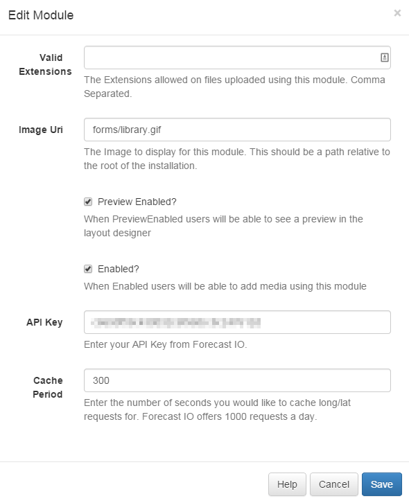
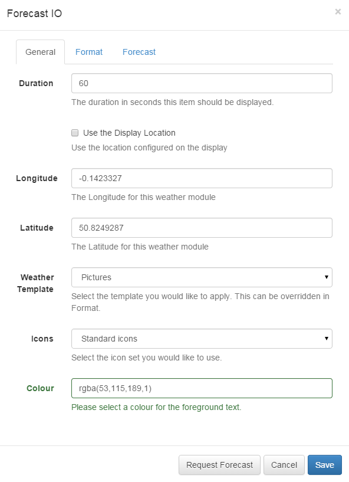

Weather
The Xibo weather widget provides current and daily weather forecasts worldwide. It uses the DarkSky API as a source of weather data and a valid account on this service is needed before usage.
If the CMS is hosted on the Spring Signage Xibo Cloud then the DarkSky API has been configured and is provided as part of the service.
Installation
The module comes pre-installed on all 1.7 installations, but needs an API key from DarkSky API to function correctly. This should be obtained by creating an account and (if you will exceed 1000 calls per day) entering your billing information.
This configuration is entered in the Module Administration page by Editing the "Forecast IO" module.
There are two settings required:
- API Key
- Cache Period

API Key
The API key is obtained after registering an application on the Forecast developer website.
The API Key identifies the Xibo CMS with Forecast and allows the CMS access to the weather data.
Cache Period
Forecast allow 1000 requests for a forecast per day before charging a small fee for each subsequent request.
The CMS allows a cache period to be specified which will create a delay between requests for each geographic location.
Adding to a Layout
Weather data can be added to any layout and configured to use either a provided latitude / longitude, or the displays latitude / longitude. If the displays latitude / longitude is selected the default global location will be used in the preview.

You will also be asked to select a template to control how the Widget is presented. There are several to choose from and a user designed template can be provided by selecting "Override the Template".
Editing the default templates
Selecting a template on the General tab will automatically load that templates structure and presentation in the Format tab. These can be edited and saved with each Layout.
There are 5 sections that need to be provided:
-
Current Template
This is also known as the "main" template as it is used for the current weather conditions and as the basis for the repeating daily template.
-
Daily Template
This is the repeating template that should be provided for the 7 day forecast. It will be repeated for each day and then substituted into the special
[dailyForecast]tag (which should feature on the main template). The[dailyForecast]tag has 2 optional settings which can be added to the tag by including the|character. These are[dailyForecast|Number of days|Start day]and default to 7 days, starting at tomorrow (day 2). If you wanted to see the next 3 days you would use[dailyForecast|3], for a 3 day forecast starting the day after tomorrow use[dailyForecast|3|3]. A common example is to ignore the "Current Template" and produce a full 7 day forecast using the daily forecast - this is achieved with[dailyForecast|7|1]. -
CSS
This is the CSS to apply to the template structure above. It will be augmented with a colour attribute and has a special
[[ICONS]]which will be replaced with the selected icon sprite (see section below). -
Design Width
This is the intended width of the template and is used to scale the Widget within its region when the template is applied.
-
Design Height
This is the intended height of the template and is used to scale the Widget within its region when the template is applied.
The template will be automatically scaled and should be designed for the intended output resolution. This scaling means there are some guidelines that should be considered when editing templates:
- The template must be designed at a fixed size
- All elements must use absolute sizing in px, including fonts, margins, widths, heights, etc
- If positioning is used, it must be from top,left
- Templates can use bootstrap
- The aspect ratio will of the template will be fixed by Xibo and sized to fit the region
- Templates are treated the same as a static image
Request a Forecast
It is possible to "request a forecast" at any time to see what forecast data is returned. Any field is available as a substitute in the template by entering the field name between square brackets - for example [nearestStormDistance].
Extending with new icons
New icons can be added by a system administrator who has access to the file system. Any PNG file
in modules/theme/forecastio/weather_icons will be made available for selection in the Icons selector.
Weather icons are provided as a sprite, each icon is 128x128 and should represent the same weather conditions as the shipped icon sprite.
For example, a "clear-day" is represented by the icon in position 1, a "windy day" is represented by the icon in position 11.
Attribution
The DarkSky terms of service should be read and understood before using this module and all Widget templates should include the text "Powered by DarkSky".